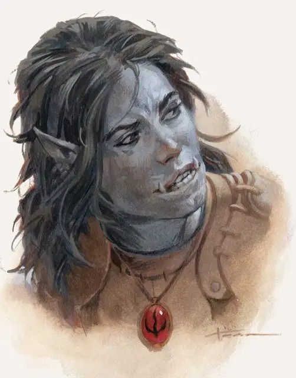

Ягра Стоунфист
Yagra Stonefist
Средний Гуманоид (Женщина полуорк), нейтральный, именной НИП

Класс Доспеха 11 (кожаный доспех)
Хиты 32 (5к8 + 10)
Скорость 30 футов
| мод | спас | ||
|---|---|---|---|
| СИЛ | 15 | +2 | +2 |
| ЛОВ | 11 | +0 | +0 |
| ТЕЛ | 14 | +2 | +2 |
| мод | спас | ||
|---|---|---|---|
| ИНТ | 10 | +0 | +0 |
| МДР | 10 | +0 | +0 |
| ХАР | 11 | +0 | +0 |
Навыки Запугивание +2
Чувства тёмное зрение 60 футов, пассивное Восприятие 10
Языки Общий, Орочий
Опасность 1/2 (100 опыта)
Бонус мастерства +2
Особенности
Тактика стаи. Ягра совершает с преимуществом броски атаки по существу, если в пределах 5 футов от этого существа находится как минимум один дееспособный союзник Ягры.
Непоколебимая стойкость. Если хиты Ягры опускаются до нуля, но при этом она не убита, её хиты вместо этого опускаются до 1. Она не можете использовать это умение снова, пока не закончит продолжительный отдых.
Свирепые атаки. Если Ягра совершила критическое попадание рукопашной атакой оружием, она может добавить к урону еще одну кость урона оружия.
Действия
Мультиатака. Ягра совершает две рукопашные атаки.
Булава. . Рукопашная атака оружием: +4 к попаданию, досягаемость 5 футов, одно существо. Попадание: Дробящий урон 5 (1к6 + 2).
Тяжелый арбалет. Дальнобойная атака оружием: +2 к попаданию, дистанция 100/400 футов, одна цель. Попадание: Колющий урон 5 (1к10).
Описание
Ягра нанята Чёрной Сетью для охраны Жента дипломата Дэвила Старсонга. Она скучает на работе и любит развлекаться, бросая авантюристам вызов в армрестлинге (решай результаты этого соревнования с помощью проверок Атлетики). Если персонажи покажут себя противниками Гильдии Занатара, возможно, Ягра попробует убедить их поговорить с Дэвилом по поводу вступления в Жентарим, чтобы вместе уничтожить криминального лорда бехолдера.